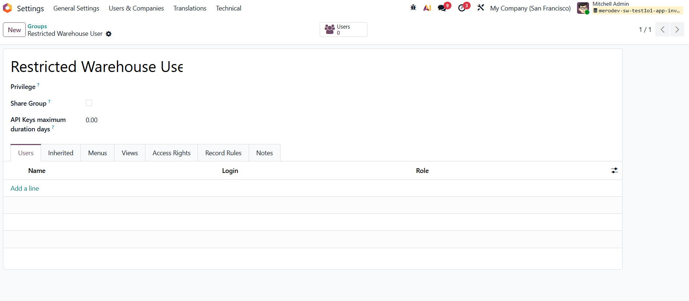
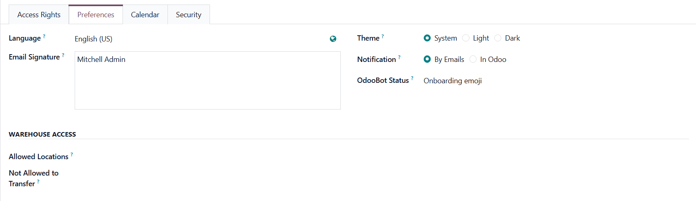

Inventory Access Control helps companies manage warehouse permissions by assigning each user to specific warehouse locations and controlling where stock can be transferred.
The module also enforces a secure two-step transfer process through a dedicated Transit location.
Assign warehouse employees to the Restricted Warehouse User group to activate the module's warehouse access restrictions.
Only users assigned to this group will be affected by the configured warehouse and transfer permissions.

Configure the warehouse locations each user can access and specify the destinations they are permitted to transfer stock to.
Each user can only view and operate on the assigned warehouse locations, while administrators can define exactly which destinations the user is allowed to transfer stock to.

Instead of allowing direct warehouse-to-warehouse transfers, the module enforces a secure two-step workflow through a dedicated Transit location.
This workflow provides better stock tracking and complete traceability for inter-warehouse movements.
Need support, customization, or additional Odoo development services? Contact the Merodev Software team.
We develop reliable Odoo solutions that help businesses improve security, efficiency, and operational control.